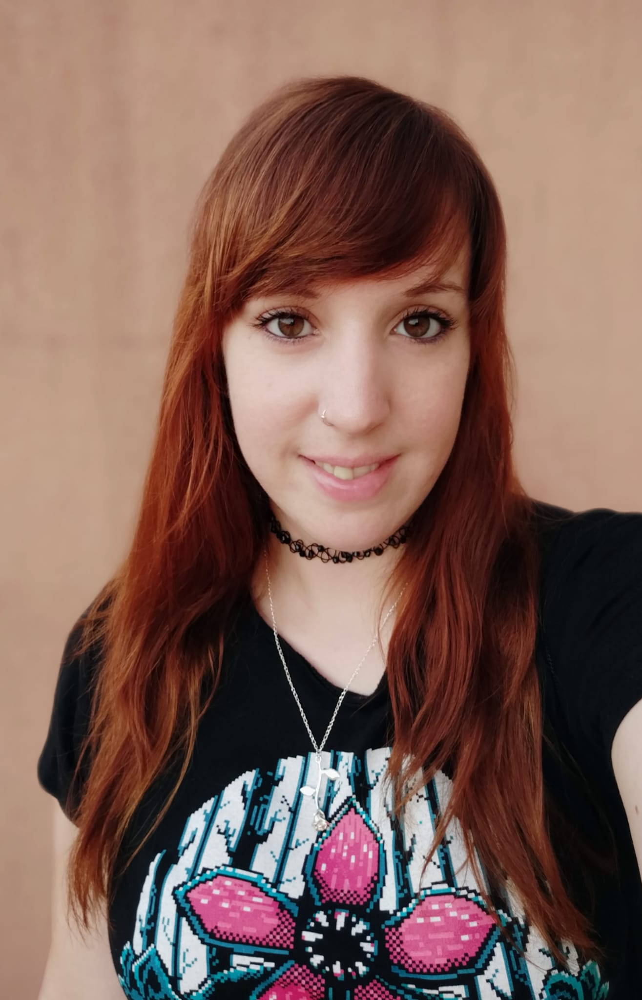

SOBRE MÍ:
¡Hola! Mi nombre es Mª Carmen, aunque todo el mundo me llama Mamen, y decidí estudiar Desarrollo de Aplicaciones Multiplataforma porque quería dar un cambio radical en mi vida, y comenzar a estudiar algo que me lleva apasionando
desde que era pequeña, pero que nunca me había planteado realizar como profesión.
Siempre me ha gustado la informática y los videojuegos, que han sido mi mayor hobby toda mi vida, pero acabé tirando por la rama de salud y estudié Fisioterapia, a lo que me he dedicado los últimos 7 años de mi vida. Después de comprobar
que no era realmente feliz y que las condiciones laborales eran pésimas, decidí lanzarme a la piscina y estudiar DAM.
Escogí CENEC como centro porque conozco mucha gente que ha estudiado aquí y todos estaban muy contentos, señalando todo lo que habían aprendido. A día de hoy puedo decir que estoy realmente contenta con la decisión que he tomado, y que
espero seguir aprendiendo muchísimo cada día, y con la misma ilusión que tengo ahora mismo.
CENTRO DE ESTUDIOS CENEC:
"Más de 24.000 alumnos formados en los últimos 32 años, dan una idea de la calidad y el compromiso de nuestro equipo. La experiencia, el conocimiento, la pasión por la tecnología, la proactividad y el prestigio, nos han convertido en el partner imprescindible de la industria para buscar y contratar los mejores profesionales.
Contamos con líderes tecnológicos, apoyando nuestra labor de formación en el mundo digital a través de alianzas estratégicas, mecenazgo y colaboración."
- Misión formativa:
Preparar y proporcionar al ecosistema empresarial actual los mejores profesionales tecnológicos, que la industria necesita.
- Visión formativa:
Tecnología = motor del cambio en las sociedades actuales. Buscamos a los alumnos que quieran liderar esta transformación.
- Valores:
Respeto, trabajo, esfuerzo y confianza.
- Gran equipo con los mejores profesionales:
Trabajamos con profesores con más de 10 años de experiencia en cada una de nuestras áreas de formación.
- Alianzas:
Nuestras alianzas tecnológicas y empresariales nos apoyan y nos ven como la fuente de sus futuros profesionales.